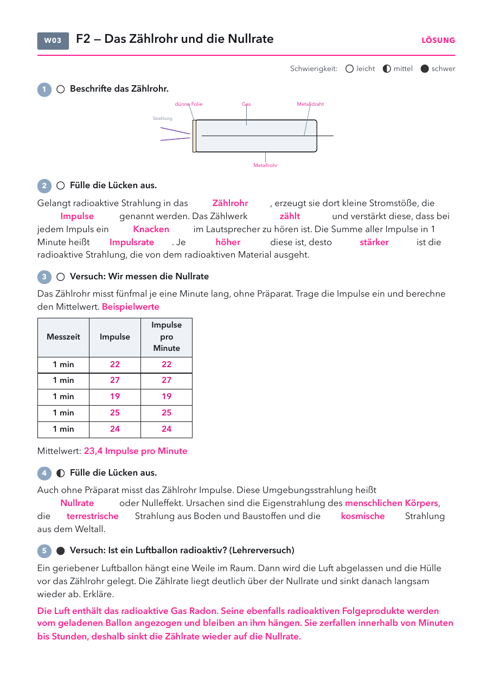

- Arbeitsblatt Zählrohr und Nullrate: Seite 1, eins pro Schüler.
- Folien und Lösungen: nicht drucken.
Material
Demo (für dich)
| Material | Anzahl | Hinweis |
|---|---|---|
| Geiger-Müller-Zählrohr mit Zählgerät | 1× | Lautsprecher an |
| Stoppuhr | 1× | fünfmal eine Minute |
| Luftballon und Wolltuch | je 1 | vor der Stunde gerieben und aufgehängt |
Schülerversuch (pro Gruppe)
| Material | Anzahl | Hinweis |
|---|---|---|
| nicht nötig | ||
Kein Präparat nötig. Das Zählrohr ist vor der Stunde eingeschaltet und steht weit weg von der Präparatesammlung. Ballon 20 bis 30 Minuten vorher im Keller aufhängen.
Die Stunde
1 · Abschluss Leitfrage 1
2 · Einstieg Leitfrage 2
3 · Versuch
4 · Alltag
1
Abschluss Leitfrage 1
Antwort ins Heft, Check.
Antwort ins Heft, Check.
2
Einstieg Leitfrage 2
Zählrohr klickt, Leitfrage 2.
Zählrohr klickt, Leitfrage 2.
3
Versuch
Nullrate messen, Arbeitsblatt, dann der Ballon vor dem Zählrohr.
Nullrate messen, Arbeitsblatt, dann der Ballon vor dem Zählrohr.
4
Alltag
Natürliche Strahlung.
Natürliche Strahlung.
Folie 1
Antwort auf Leitfrage 1
Woraus besteht Materie?
Aus Atomen mit einem winzigen, schweren Kern aus Protonen und Neutronen und einer
fast leeren Hülle aus Elektronen. Die Protonenzahl bestimmt
das Element, die Neutronenzahl unterscheidet die Isotope eines Elements.
Folie 2
Check zu Leitfrage 1
1) Was gibt die Kernladungszahl Z an?
- Die Anzahl der Neutronen
- Die Anzahl der Protonen
- Protonen und Neutronen zusammen
- Die Masse des Atoms in Gramm
2) Zwei Atome haben je 6 Protonen, aber 6 bzw. 8 Neutronen. Was gilt?
- Es sind verschiedene Elemente.
- Es sind Isotope desselben Elements.
- Eines davon ist ein Ion.
- Das ist unmöglich.
Folie 3
Lösung
1) b 2) b
Folie 4
Beobachte
Auch ohne Präparat klickt es ab und zu. Woher kommt diese Strahlung?
Folie 5
Leitfrage 2
Warum zerfallen manche Atomkerne von selbst?

Was vermutest du? Wir sammeln eure Vermutungen.
Folie 6 · Schülerblatt mit Lösung
📄 Arbeitsblatt austeilen · Nullrate vorne messen · Ballonversuch am Ende

Folie 7
Natürliche Strahlung im Alltag
| im Alltag | was man sieht | warum |
|---|---|---|
| Keller | Radon aus dem Boden | Ein radioaktives Gas, das sich in Kellerräumen sammeln kann. |
| Flugzeug | mehr kosmische Strahlung | In großer Höhe schirmt weniger Luft ab. |
| unser Körper | Kalium-40 | Ein kleiner Teil des Kaliums in Muskeln und Nahrung ist radioaktiv. |
| Granit, Schwarzwald | etwas höhere Zählrate | Das Gestein enthält Spuren von Uran und Thorium. |
Frage: Warum misst das Zählrohr im Physikraum auch ohne Präparat Impulse?
Das Zählrohr
- Geiger-Müller-Zählrohr: Metallrohr (Kathode) mit einem Edelgas und einem dünnen Draht in der Mitte (Anode), dazwischen etwa 500 V. Vorne ein dünnes Glimmerfenster, damit auch α-Teilchen hineinkommen.
- Strahlung ionisiert das Gas, die Ladungen lösen eine Lawine aus, es gibt einen kurzen Stromstoß (Impuls). Hans Geiger baute 1913 den Vorläufer, mit Walther Müller 1928 das heutige Zählrohr.
- Das Zählrohr zählt Impulse. Es unterscheidet nicht zwischen α, β und γ und erfasst nur einen Teil der Strahlung.
- Nullrate: Je nach Zählrohr und Ort etwa 10 bis 40 Impulse pro Minute. Sie schwankt zufällig, deshalb mehrere Minuten messen und mitteln.
- Typische Fehlvorstellungen: Strahlung gibt es nur in der Nähe von Kernkraftwerken. Das Zählrohr misst „die Radioaktivität“ eines Stoffes direkt.
Wie Radioaktivität entdeckt wurde
- Röntgen entdeckte 1895 die nach ihm benannte Strahlung. Becquerel fand 1896, dass Uransalze eine eingepackte Fotoplatte schwärzen, ganz ohne Licht.
- Marie und Pierre Curie entdeckten 1898 Polonium und Radium und prägten das Wort „radioaktiv“. Marie Curie erhielt 1903 (Physik) und 1911 (Chemie) den Nobelpreis.
- Einheit der Aktivität ist das Becquerel: 1 Bq heißt ein Zerfall pro Sekunde. Das ist nur Ausblick, das Zählrohr misst weniger als die Aktivität.
Tipps zu den Versuchen
- Lautsprecher an, damit die Klasse das Knacken hört. Fünfmal eine Minute messen, Werte an der Tafel sammeln.
- Die Streuung der Werte ist gewollt: Radioaktiver Zerfall ist Zufall. Das bereitet Leitfrage 2 vor.
- Luftballon: vor der Stunde aufblasen, an Wolle reiben und 20 bis 30 Minuten aufhängen, am besten in einem Kellerraum. Dann Luft ablassen, Hülle zusammenknüllen und direkt vor das Zählrohr legen. Der Ballon sammelt Folgeprodukte des Radons (vor allem Pb-214 und Bi-214). Die Zählrate sinkt innerhalb von ein bis zwei Stunden wieder auf die Nullrate. Wie stark der Effekt ist, hängt vom Radongehalt der Luft ab. Klappt es nicht, zeigt das Strahlungslabor den Verlauf.
Strahlungslabor
Labor öffnenNullrate mit zehn zufälligen Messungen und Mittelwert. Luftballon: Zählrate über der Zeit, gerieben und ungerieben.
Arbeitsblatt Zählrohr und Nullrate
PDF öffnenLösung: 1 dünne Folie, 2 Gas, 3 Metalldraht, 4 Metallrohr. Lücken: Zählrohr, Impulse, zählt, Knacken, Impulsrate, höher, stärker. Beispielmessung 22, 27, 19, 25, 24, Mittelwert 23,4. Nullrate, menschlichen Körpers, terrestrische, kosmische. Ballon: sammelt radioaktive Folgeprodukte des Radons aus der Luft, diese zerfallen, die Zählrate sinkt wieder.